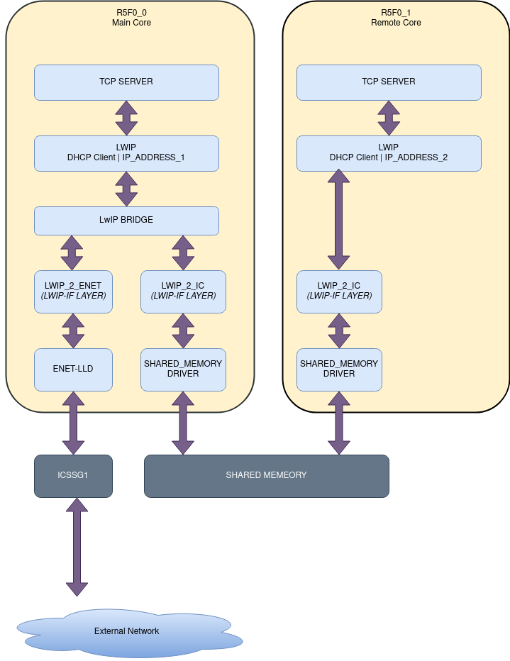

Introduction
- Note
- LwIP features are made available as is from public lwIP project. SDK configuration may only enable and exercise a subset of these features.
This example shows about how to use shared memory based Intercore driver for data traffic sharing accross coupled with ethernet driver (ENET) and LwIP bridge.
On AM64X, we can do ethernet based communication using ICSSG Hardware peripheral
- ICSS
- This is a firmware enabled ethernet switch + port HW
- This HW can be used with industrial communication protocols as well
- In this example we use ICSS as a standard ethernet port
It uses ENET ethernet driver underneath with LwIP TCP/IP networking stack
The example demonstrates the driver feature to exchange ethernet (IEEE 802.1) packets between r5fss0-0 and r5fss0-1 cores, via shared memory and ethernet bridge (LwIP software bridge). CPU core r5fss0-0 fully owns & configures ICSSG1 peripheral resource and the corresponding DMA channels to handle packet reception/transmission directly from/to ICSSG1. It steers the traffic to core r5fss0-1 based on MAC address, using LwIP bridge. Seperate MAC addresses are used to differentiate different CPU core traffic. Both the MAC address are added to ICSSG host port FDB entry so that HW accepts the traffic with those MAC addreess. Seperate TCP/IP (LiWP) stack instances are setup in each core, with independent DHCP client, thus different IP addresses for each core. Furthermore, at application level TCP echo servers are initialized on socket port 8888, in each core to handle the TCP traffic.
Core r5fss0-1 get the packet form ICSSG1 via LwIP bridge running on core r5fss0-0, using shared memory driver.
Few details on the operating sequence of this example is mentioned below:
- CPU r5fss0-0 initializes ICSSG ethernet driver (LwIP netif 0) and shared memory enet (LwIP netif 1) driver. Setups LwIP bridge with bridgeIF, linked to netif0 and netif1.
- CPU r5fss0-1 initializes shared memory enet driver and links to LwIP netif. Prints of r5fss0-1 is directed to CCS console and Prints of r5fss0-0 is directed to UART terminal.
- CPU cores r5fss0-0 and r5fss0-1 are referred respectively as main core and remote core in the example.
- Both r5fss0-0 and r5fss0-1 uses RPMsg to intercommunciated the control messages, in addition to shared memeory interface (which is used to communicate packet data). TCP Server tasks running on each core awaits for connection from external client on port 8888. When connection is established, it waits for a message from the connected client.
- In response to external clients message. TCP Server task sends back "Greetings from Texas Instruments!" message back to client and closes the connection.
- Supports iPerf TCP performance tests, ping (ICMP) applications across both the cores.

Application Block Diagram
Supported Combinations
| Parameter | Value |
| CPU + OS | r5fss0-0_freertos, r5fss0-1_freertos |
| Toolchain | ti-arm-clang |
| Board | am64x-evm |
| Example folder | examples/networking/lwip/enet_intercore_icssg |
Note: To cnfigura anycore as main core other than r5fss0-0, user needs to change the DMA channel resource allocation to the respective core, so that it can get ICSSG DMA channels for packet tracnser is available for the configured main core. Please refer to Modifying resource allocation to change the alter the resource allocation.
Configuring Syscfg
- Following Syscfg option allows flexibility to configure memory foot print based on required use case like: Gigabit Ethernet Support Enable, premption support, McM Support and QoS level required.
- Supported Options with default configuration
| Feature | Description | Remarks/Default Setting
|
| Pkt Pool Enable Flag nable Flag | Flag to enable packet allocation from enet utils library. It should be disabled to avoid utils memory wastage, in case application allots packet via other mechanism. (Ex- Lwip pools) | Default is true. It is disabled for lwip based examples. If enabled size of pkt pool size depends on Number of Tx Packet and Number of Rx Packet.
|
| Number of Tx Packet | No of Tx packets required for DMA channel | Default is 16. It contributes to the size of Pkt Mem Pool, DMA ring buffer and accessories.
|
| Number of Rx Packet | No of Rx packets required for DMA channel | Default is 32. It contributes to the size of Pkt Mem Pool, DMA ring buffer and accessories size.
|
| QoS Level | No of QoS level required | Can be in between 1-8. Higher QoS level will be serviced by adding more number of buffers.
|
| Premption Enable | Flag to enable premption | Default is false. If enabled will add premption buffer to service the feature.
|
| Gigabit Support | Decides buffer pool allocation based on interface speed selected | Default is true. Enabling this option will increase buffer requirement as more buffering required at gigabit speed.
|
| Netif instance | TI Networking / Enet (ICSSG) / LWIP Interface config | No of netifs allocated by the example | Only one netif should be set to default when more than one netif is allocated. |
TCP Client using ncat tool
Ncat is a general-purpose command-line tool for reading, writing, redirecting, and encrypting data across a network. It aims to be your network Swiss Army knife, handling a wide variety of security testing and administration tasks. Ncat is suitable for interactive use or as a network-connected back end for other tools.
- Ncat is started as server to which EVM connects.
- Version used for this example Version 7+ ( https://nmap.org/ncat )
Intercore driver setup
- Intercore driver is a shared memory based data routing layer used to send data traffic across cores.
- This needs two unique channels open between given pair of cores.
- This needs shared memory space, which is placed in a commonly accessible region.
- The region and the channel depth can be adjusted through application code.
- This uses custom pBufs which helps in decreasing the memory footprint on other dependent libraries.
- This example can be modified to work in tandem with linux. Refer to TI academy (or TI E2E forums) for more details.
Steps to Run the Example
To Configure Static IP
Please refer to Ethernet LwIP TCP/IP Static IP.
Build the example
- When using CCS projects to build, import the CCS project for the required combination and build it using the CCS project menu (see Using SDK with CCS Projects).
- When using makefiles to build, note the required combination and build using make command (see Using SDK with Makefiles)
HW Setup
- Note
- Make sure you have setup the EVM with cable connections as shown here, EVM Setup. In addition do below steps.
AM64X-EVM
For ICSSG based example
- Connect a ethernet cable to the EVM from host PC as shown below

Ethernet cable for CPSW based ethernet
Create a network between EVM and host PC
- The EVM will get an IP address using DHCP, so make sure to connect the other end of the cable to a network which has a DHCP server running.
- To get started one can create a simple local network between the EVM and the host PC by using a home broadband/wifi router as shown below. Most such routers run a DHCP server

Local network between PC and EVM
- To check the router connection with host PC, recommend to disconnect all other networking conenctions on the PC, sometimes you may need to disable firewall SW, and make sure the routeuter is able to assign a IP address to your host PC
- After we run the example on the EVM (next step), the EVM will similarly be assigned a IP address, and then host can communicate with the EVM using the assigned IP address.
- To enable static IP, set the static IP in the ipAddr variable in the App_setupNetif() before passing it as arguement to initiate the netif, and stop the dhcp from starting in the App_allocateIPAddress() function.
Run the example
- Attention
- If you need to reload and run again, a CPU power-cycle is MUST
- Launch a CCS debug session and run the example executable, see CCS Launch, Load and Run
- You will see logs in the UART terminal as shown in the next section.
- Note the IP address seen in the log, this is what we will use to communicate with the EVM.
Sample output
Steps to execute
- Run example on EVM
- Try to reach the EVM using ping as shown below, using a command shell on the host PC "192.168.1.10" should be replaced with IP of EVM.
Start TCP client using 'ncat' cmds as shown below. Below steps have been tried with a Linux Ubuntu 18.04 host PC running bash shell
Install 'ncat' if not installed by doing below
Invoke 'ncat' to connect to EVM IP
$ncat 192.168.1.10 8888
$
"192.168.1.10" should be replaced with EVM IP.
- Send any msg in ncat terminal and wait for reply from EVM.
- Close the connection using Ctrl + C.
iPerf Performance
UDP Throughput
| Direction | Main core | Remote Core |
| From Networt; To core | 200 Mbps @ 100% CPU load | 150 Mbps @ 85% CPU load |
| From Core; To Network | 200 Mbps @ 100% CPU load | 160 Mbps @ 75% CPU load |
TCP Throughput
| Direction | Main core | Remote Core |
| From Networt; To core | 93 Mbps @ 60% CPU load | 46.6 Mbps @ 25% CPU load |
| From Core; To Network | 93 Mbps @ 80% CPU load | 46.6 Mbps @ 20% CPU load |
Troubleshooting issues
- If you see MAC address as
00:00:00:00:00:00, likely you are using a very early Si sample which does not have MAC address "fused" in, in this case do below steps
- Use manual MAC address populate option from sysconfig GUI
- If you see a valid, non-zero MAC address and continuosly see "Waiting for network UP..." prints in UART terminal
- Make sure you see
Enet IF UP Event. message, if not check the ethernet cable
- Check the local network and check if the DHCP server is indeed running as expected
- When using a home broadband/wifi router, its possible to check the clients connected to the DHCP server via a web browser. Check your router user manual for more details.
See Also
Ethernet And Networking
 1.8.20
1.8.20